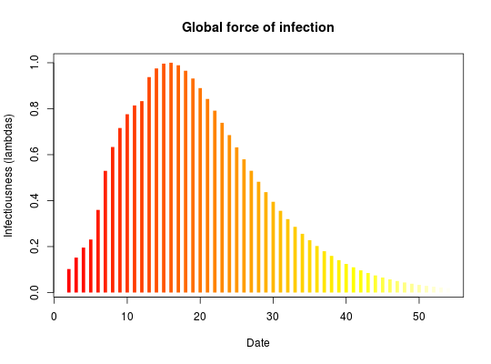

This function estimates the (most of the time, 'basic') reproduction number (R) using i) the known distribution of the Serial Interval (delay between primary to secondary onset) and ii) incidence data.
get_R(x, ...) # S3 method for default get_R(x, ...) # S3 method for integer get_R(x, disease = NULL, si = NULL, si_mean = NULL, si_sd = NULL, max_R = 10, days = 30, ...) # S3 method for numeric get_R(x, ...) # S3 method for incidence get_R(x, ...)
incidence object, as output by the package
incidence, or a vector of numbers indicating daily number of
cases. Note that 'zero' incidence should be reported as well (see
details).si_mean and si_sd will be filled
in automatically using value from the literature. Accepted values are:
"ebola".distcrete object (see package distcrete) containing
the discretized distribution of the serial interval.si is provided.si is provided.A list with the earlyR class, containing the following
components:
$incidence: the input incidence, in its original format
$R_grid: the grid of R values for which the likelihood has been
computed.
$R_like: the values of likelihood corresponding to the
$R_grid
$R_ml: the maximum likelihood estimate of R
$dates: the dates for which infectiousness has been computed
$lambdas: the corresponding values of force of infection
$si: the serial interval, stored as a distcrete object
The estimation of R relies on all available incidence data. As such,
all zero incidence after the first case should be included in
x. When using inidence from the 'incidence' package, make
sure you use the argument last_date to indicate where the epicurve
stops, otherwise the curve is stopped after the last case. Use
as.data.frame to double-check that the epicurve includes the last
'zeros'.
if (require(incidence)) { ## example: onsets on days 1, 5, 6 and 12; estimation on day 24 x <- incidence(c(1, 5, 6, 12), last_date = 24) x as.data.frame(x) plot(x) res <- get_R(x, disease = "ebola") res plot(res) plot(res, "lambdas") }